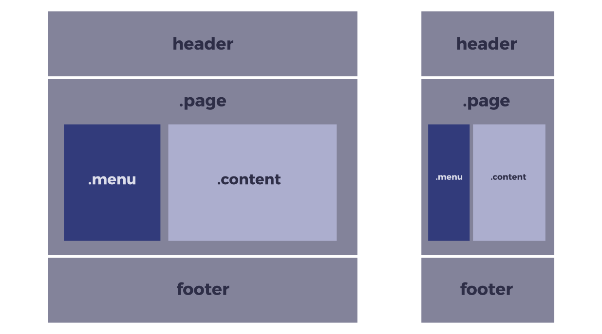
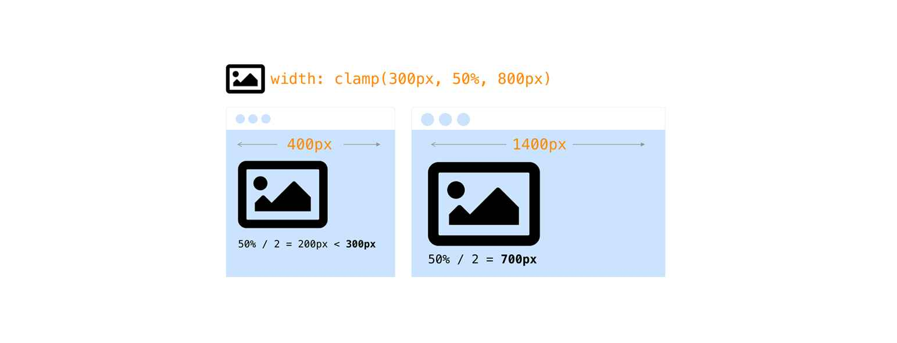

Bitácora de Temas
Tema 1: Grid
Ideas Principales
- Grid es un sistema de diseño bidimensional basado en cuadrículas.
- Grid fue creado específicamente para resolver problemas de diseño web complejos.
- A diferencia de Flexbox, Grid permite estructurar elementos en filas y columnas simultáneamente.
Resumen
Grid Layout permite una estructura precisa en dos dimensiones. Supera limitaciones de métodos como float o position.
Los elementos hijos del contenedor se convierten en ítems del grid automáticamente.
Las líneas horizontales se llaman "rows" y las verticales "columns".

Tema 2: Unidades Responsivas
Ideas Principales
- Unidades absolutas (px, cm, in) representan tamaños fijos.
- Unidades relativas (% , em, rem) se adaptan al contexto.
- Unidades de viewport (vw, vh, vmin, vmax) cambian según la ventana.
Resumen
Las unidades de viewport como vw y vh se adaptan al ancho y alto de la pantalla.
vmin y vmax permiten adaptar el diseño según la orientación del dispositivo.
dvh y svh proporcionan valores más precisos y estables en móviles.

Tema 3: Calc y Clamp
Ideas Principales
calc()permite operaciones matemáticas entre unidades.clamp(min, ideal, max)define un rango dinámico.- Ambas funciones permiten mayor control sin media queries.
Resumen
Ventajas:
- Flexibilidad
- Responsividad
- Simplicidad
clamp() es ideal para tipografía adaptable.
Usar calc() ayuda a combinar porcentajes con píxeles o rem.

Tema 4: Repeat, Minmax, Auto-fill
Ideas Principales
- Grid permite usar funciones como
repeat()para reducir código repetido. minmax()establece un tamaño mínimo y máximo.auto-fillyauto-fitayudan a distribuir mejor las columnas.
Resumen
Estas funciones permiten diseños fluidos y adaptables con menos media queries. Se adaptan al contenedor automáticamente.